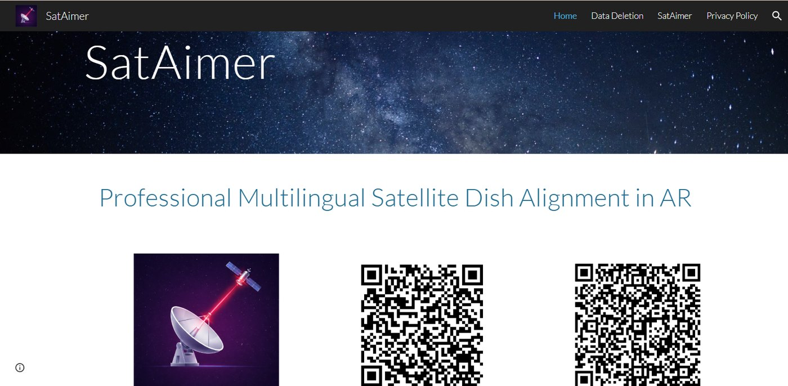
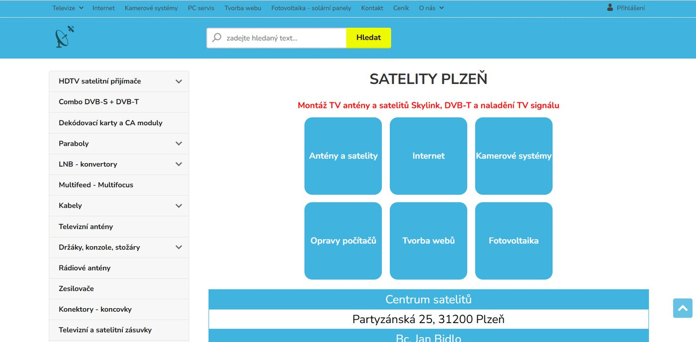
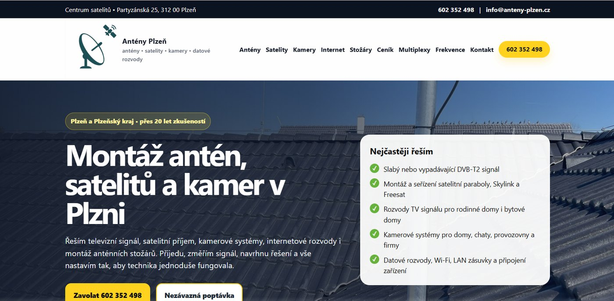
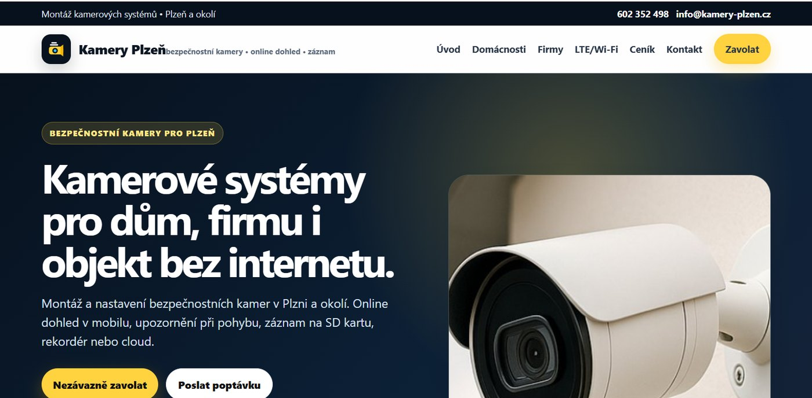
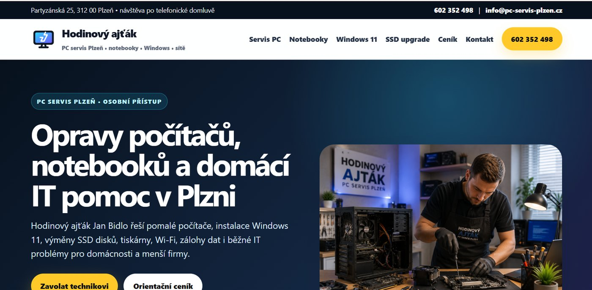
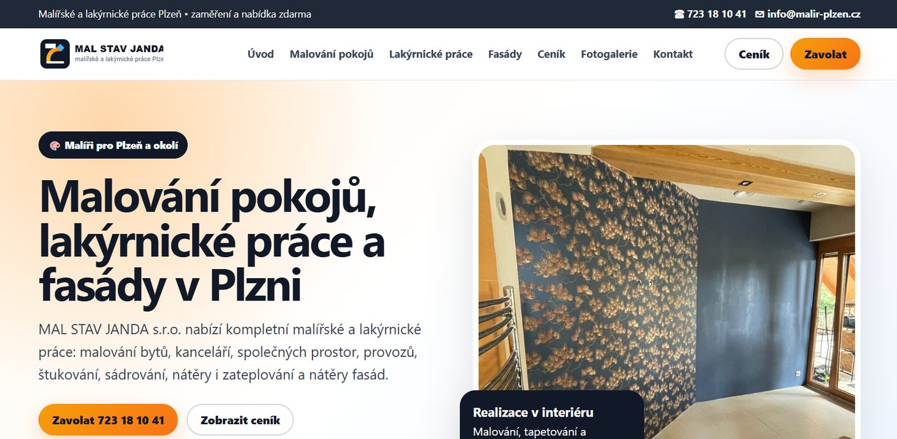
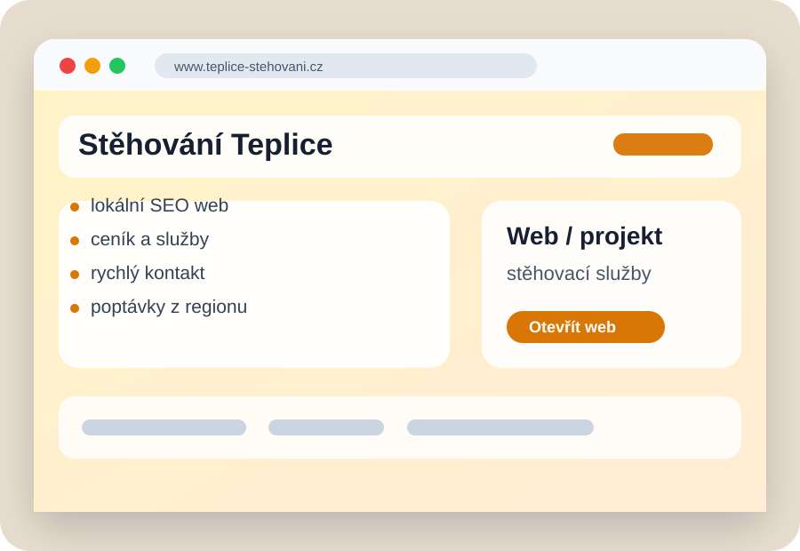
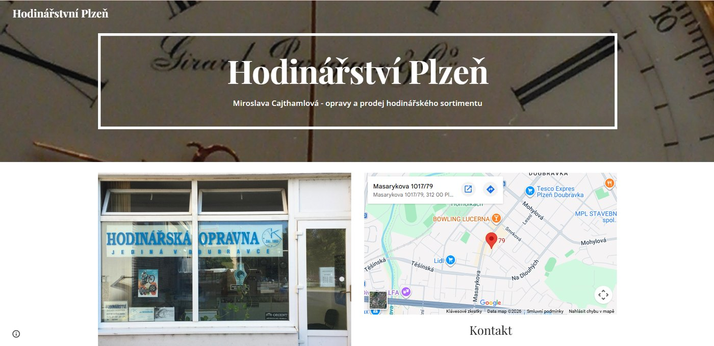
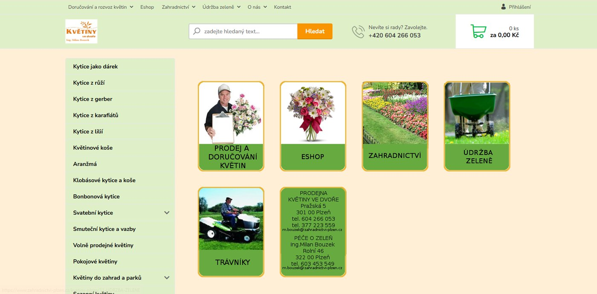
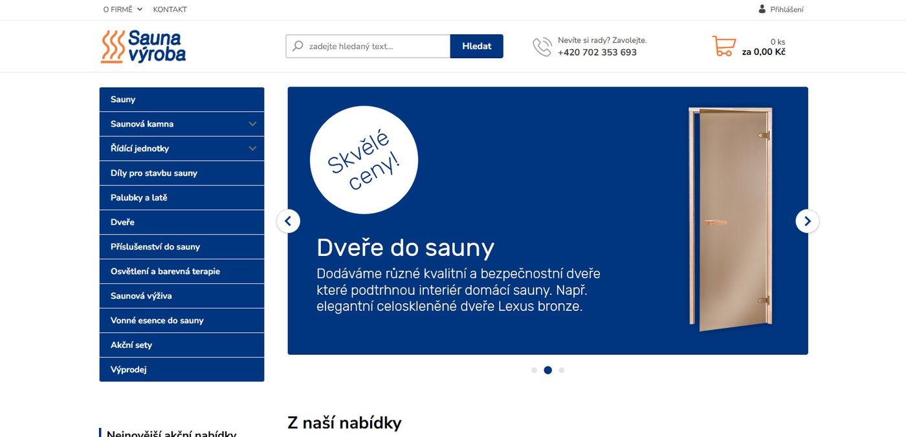

Tvorba webových stránek
Firemní weby, jednostránkové prezentace, vícestránkové lokální SEO weby, landing pages a redesign starších webů.
- responzivní design
- rychlé načítání
- kontaktní formuláře
- základní analytika
Tvorba webových stránek Plzeň
Vytvářím rychlé firemní weby, lokální SEO prezentace, jednoduché e‑shopy i složitější aplikace. K tomu umím vyřešit počítače, síť, e‑maily, hosting a technické napojení služeb.
Nejsem anonymní agentura. Zakázku řešíte přímo s technikem, který web navrhne, postaví a umí ho i dlouhodobě udržovat.
Pro koho je služba vhodná
Nejde jen o pěkný vzhled. Dobrý web musí jasně říct, co děláte, kde působíte, proč vám má zákazník zavolat a co má udělat jako další krok.
Proto řeším strukturu služeb, lokální vyhledávání, rychlost načítání, měření poptávek i praktickou správu. U složitějších projektů doplním databázi, administraci, PDF výstupy, mapy, platební bránu nebo mobilní aplikaci.
Služby
Firemní weby, jednostránkové prezentace, vícestránkové lokální SEO weby, landing pages a redesign starších webů.
Složitější webové a mobilní aplikace, administrace, databáze, exporty, interní nástroje a napojení na externí služby.
Struktura webu, texty pro služby, technické SEO, titulky, popisy, interní odkazy a příprava pro lokální vyhledávání.
Domény, e‑maily, zabezpečení, zálohy, úpravy textů, nasazení na hosting a dlouhodobá správa po spuštění.
Instalace Windows, odvirování, zrychlení počítače, výměna SSD, zálohy dat, nastavení tiskáren, e‑mailů a programů.
Wi‑Fi, routery, datové rozvody, sdílení souborů, pracovní stanice, tiskárny a technické zázemí pro malé firmy.
Aplikace a náročnější projekty
Dokážu postavit i projekt, který má vlastní logiku, uživatelské rozhraní, databázi, exporty, mapy, výpočty nebo mobilní aplikaci. Typicky jde o interní firemní nástroj, rezervační systém, katalog, konfigurátor, technickou kalkulačku nebo aplikaci pro koncové zákazníky.
Reference
Do referencí jsem vložil přímo titulní obrazovky dodaných webů, aby návštěvník hned viděl skutečný výsledek – ne jen ilustrační ikonky.

Aplikace pro přesné zaměření satelitní paraboly pomocí rozšířené reality, výpočtů a databáze satelitů. Součástí je prezentační web a publikace aplikace v obchodech.

Web pro montáže antén, satelitů, televizní techniku a navazující služby v Plzni.

Moderní lokální web pro antény, satelity, kamery, stožáry, datové rozvody a servis signálu.

Prezentace bezpečnostních kamer pro domy, firmy i objekty bez internetu.

Web pro opravy počítačů, notebooků, Windows, SSD upgrady, tiskárny, Wi‑Fi a domácí IT pomoc.

Prezentace malířských a lakýrnických prací s fotkami realizací, ceníkem a kontaktem.

Rychlý web pro stěhovací služby s jasnou nabídkou, cenami a poptávkou.

Jednoduchá prezentace hodinářství s fotografií provozovny, mapou a kontaktními údaji.

Web s kategoriemi květin, zahradnictví, údržbou zeleně a e‑shopovou strukturou.

Produktový web s nabídkou saun, kamen, dveří, příslušenství a akčních setů.
Postup spolupráce
Orientační ceník
Přesná cena závisí na rozsahu, počtu podstránek, dodaných materiálech, požadovaných funkcích a termínu. Nejsem plátce DPH.
Pro živnostníka, který potřebuje rychle jasně prezentovat službu.
od 9 900 KčNejčastější varianta pro řemeslníky, servisní firmy a lokální služby.
od 19 900 KčRozvětvený web pro více služeb, lokalit nebo samostatné podstránky.
od 35 000 KčWebová nebo mobilní aplikace s vlastní logikou, daty a správou.
od 60 000 KčPrůběžné úpravy webu, opravy, zálohy, nové texty a drobný vývoj.
700 Kč / hod.Servis počítačů, instalace, čištění systému, zálohy, tiskárny a sítě.
700 Kč / hod.Komplet práce pro počítače
Když zákazník řeší web, často současně řeší e‑maily, počítače, tiskárnu, fotky, zálohy, doménu, hosting nebo přesměrování staré pošty. Tyto věci umím propojit do jednoho funkčního celku.
FAQ
Jednoduchý web začíná orientačně na 9 900 Kč. Běžný firemní web pro lokální službu se nejčastěji pohybuje od 19 900 Kč. Větší SEO web nebo web s více službami začíná přibližně na 35 000 Kč.
Ano. Můžeme zachovat doménu, převzít důležitý obsah, upravit strukturu, přepsat texty a web modernizovat tak, aby fungoval dobře na mobilu i ve vyhledávání.
Podle typu řešení ano. U některých webů je vhodná jednoduchá správa obsahu, u jiných je výhodnější rychlý statický web a drobné úpravy řešit přes mě.
Ano, menší e‑shopy nebo katalogy produktů jsou možné. U větších e‑shopů je potřeba dopředu promyslet sklad, platby, dopravu, fakturaci a dlouhodobou správu.
Ano. Může jít o webovou administraci, interní nástroj, aplikaci pro zákazníky, databázi, PDF exporty, mapy nebo mobilní aplikaci pro Android a iOS.
Ano. Řeším instalace, opravy Windows, nastavení pošty, zálohy, tiskárny, sítě, routery, Wi‑Fi a technické věci kolem provozu firmy.
Kontakt
Nejrychlejší je zavolat. U webu si připravte adresu současného webu, obor podnikání, oblast působnosti a pár příkladů webů, které se vám líbí.
Partyzánská 25, 312 00 Plzeň
IČ: 87150671 · neplátce DPH